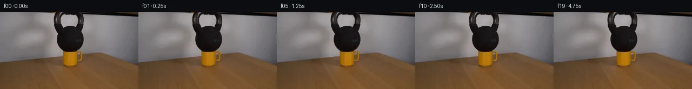

![首帧]()

Round 00
2026-11-05T10:27:55.263471+00:00像素候选变化代码 +115/−0inspection 更新
pixels b619a2b2fb667945 · code ba71eef4c5553f4f
查看本轮 generate.py 真实 diff
--- previous/generate.py
+++ current/generate.py
@@ -0,0 +1,115 @@
+from pathlib import Path
+
+import numpy as np
+from PIL import Image, ImageDraw
+
+from artifact_io import save
+
+
+ROOT = Path(__file__).resolve().parent
+
+
+def make_frames() -> np.ndarray:
+ """Make a conservative continuation of the already static load test."""
+ source = np.asarray(Image.open(ROOT / "first_frame.png").convert("RGB"), dtype=np.uint8)
+ if source.shape != (144, 256, 3):
+ raise ValueError(f"Unexpected source shape: {source.shape}")
+
+ frames = np.repeat(source[None, ...], 20, axis=0)
+
+ # The bell already touches the mug. Represent only the last imperceptible
+ # settling of the contact shadow, without moving or deforming either object.
+ yy, xx = np.mgrid[0:144, 0:256]
+ red, green, blue = (source[..., i].astype(np.int16) for i in range(3))
+ warm_ceramic = (
+ (red > 120)
+ & (green > 55)
+ & (green < 205)
+ & (blue < 95)
+ & ((red - green) > 24)
+ )
+ contact_roi = (xx >= 116) & (xx <= 144) & (yy >= 73) & (yy <= 82)
+ # Centered just beneath the kettlebell's bottom; tapering avoids an edge.
+ gaussian = np.exp(-(((xx - 130.0) / 13.0) ** 2 + ((yy - 74.5) / 5.0) ** 2))
+ influence = gaussian * warm_ceramic * contact_roi
+
+ # A critically damped four-frame approach; the state remains fixed after t=1 s.
+ settling = np.array(
+ [0.0, 0.42, 0.72, 0.90, 1.0] + [1.0] * 15,
+ dtype=np.float32,
+ )
+ shadow_rgb = np.array([4.0, 3.0, 1.0], dtype=np.float32)
+ src16 = source.astype(np.int16)
+ for t in range(1, 20):
+ decrement = np.rint(influence[..., None] * settling[t] * shadow_rgb).astype(np.int16)
+ frames[t] = np.clip(src16 - decrement, 0, 255).astype(np.uint8)
+
+ # Rule-critical invariant: frame 00 is the source pixels exactly.
+ frames[0] = source
+ return frames
+
+
+def save_transition_check(frames: np.ndarray) -> None:
+ """Write a numeric-friendly montage of milestones and amplified deltas."""
+ picks = [0, 1, 4, 19]
+ canvas = Image.new("RGB", (1024, 330), (25, 28, 35))
+ draw = ImageDraw.Draw(canvas)
+ base = frames[0].astype(np.int16)
+ for col, t in enumerate(picks):
+ x = col * 256
+ draw.text((x + 5, 3), f"frame {t:02d} / source view", fill="white")
+ canvas.paste(Image.fromarray(frames[t]), (x, 21))
+ delta = np.abs(frames[t].astype(np.int16) - base)
+ changed = np.any(delta != 0, axis=2)
+ heat = np.clip(delta * 48, 0, 255).astype(np.uint8)
+ # Mark changed pixels in a visible red channel while retaining delta magnitude.
+ heat[..., 0] = np.where(changed, np.maximum(heat[..., 0], 90), heat[..., 0])
+ draw.text(
+ (x + 5, 168),
+ f"abs delta x48; changed={int(changed.sum())}",
+ fill="white",
+ )
+ canvas.paste(Image.fromarray(heat), (x, 186))
+ canvas.save(ROOT / "transition_check.png")
+
+
+def verify(frames: np.ndarray) -> None:
+ """Verify all persisted representations against the authoritative tensor."""
+ with np.load(ROOT / "pixels.npz") as archive:
+ tensor = archive["pixels"]
+ if tensor.shape != (144, 256, 20) or tensor.dtype != np.uint32:
+ raise AssertionError((tensor.shape, tensor.dtype))
+
+ unpacked = np.empty_like(frames)
+ temporal = tensor.transpose(2, 0, 1)
+ unpacked[..., 0] = (temporal >> 16).astype(np.uint8)
+ unpacked[..., 1] = ((temporal >> 8) & 255).astype(np.uint8)
+ unpacked[..., 2] = (temporal & 255).astype(np.uint8)
… diff truncated; 28 more lines …